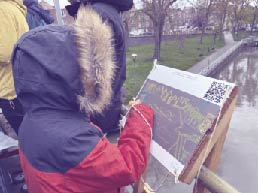
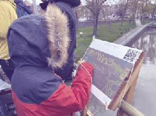
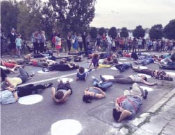
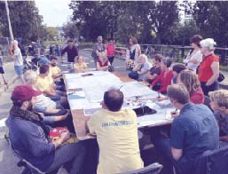
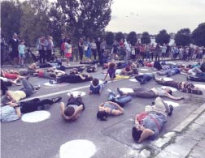
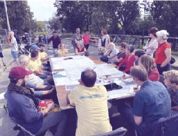
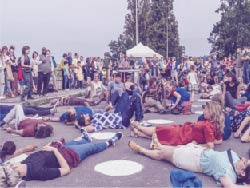
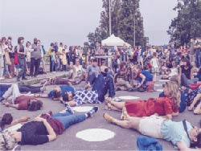

Marchantbrug:
Ceci n’est pas une route. It’s a great place to be!


Surlepont est un regroupement d’habitant·es d’Anderlecht voulant préserver le pont Marchant: comme point de vue, comme un lieu de quiétude, mais aussi comme un axe vert et un espace social urbain.
Une décision sur l’avenir de ce pont sera prise prochainement. Surlepont souhaite donner la parole à tou·tes les résident·es et passant·es qui apprécient ce lieu et qui sont favorables à la mobilité durable.


Nous trouvons cet endroit unique parce qu’il combine:
Un panorama emblématique qui vous invite vous poser
Un lieu social urbain propice aux rencontres et aux activités
Un axe vert qui favorise une mobilité active et une vie saine

 



 



 



Nous avons récemment rencontré Gianna, Ward et leur chien Dali. Gianna est italienne, Ward est originaire de Gand. Ils ont appris à connaître cet endroit lorsqu'ils vivaient à Saint-Guidon. Aujourd'hui, ils vivent à Rad, mais ils viennent encore très régulièrement sur le pont, pour jouer avec leur chien Dali, et pour profiter du soleil et de la vue sur le canal et l'horizon de Bruxelles.

Récemment nous avons rencontré les amies Anna et Flora. Anna vit dans le centre de Bruxelles, Flora et son chien Poutchi à Ixelles. Ils adorent se rattraper en promenant le long du canal. Et bien sûr, à la fin de chaque promenade il y a toujours notre joli pont pour un moment de repos et un verre.

Que notre pont soit l'endroit idéal pour un dîner romantique au coucher du soleil, Wim de Halle et Lore de Sint-Gillis le savent aussi.

Ce soir, le pont a pu accueillir l'organisation sans but lucratif "Stoepkrijt". Depuis cinq ans, une équipe formidable composée de Ben, Dries, Jonathan, Pieter et Jonas de Molenbeek et Forest permet aux gens de se réunir et de regarder les matchs des Diables Rouges sur un grand écran. Ce soir, les Stoepkrijtjes ont choisi le pont comme lieu de rendez-vous. L'atmosphère était fantastique, même après le match. https://instagram.com/vzw_stoepkrijt

Bruno Steinrücke est l’un des fondateurs et l’actuel président de Sémaphore, la seule maison de jeunes en Belgique sur l’eau. La péniche se trouve à côté du pont Marchant, au quai Biestebroeck. Il habite également une péniche située sur la Digue du Canal, et est trésorier de l’association des habitants des péniches. Il s’engage donc depuis des décennies des deux côtés du pont.

Pieter vit à Cureghem. Notre pont est une étape régulière des séances d'entraînement à la course à pied le long du canal qu'il entreprend régulièrement.

Maya et Flavien viennent de déménager Rue de la Gaité. Leurs ami.es, Bilou, Emma, David, Lucie, Hichem, sont venu.es les aider à déplacer quelques meubles dans leur nouvelle maison. Ils partagent une bière au soleil. Ils ne pouvaient pas rêver meilleur cadre!

Pieter habite à Cureghem, à 15 minutes à pied de notre pont. C'est l'espace vert public le plus proche pour lui, et il descend donc souvent dans cet endroit spécial les soirs d'été, avec un bon livre ou quelques amis pour compagnie.

Joaquin est l’un des nombreux riverains qui sont venus au pont le dimanche sans voiture. Il est Portugai, s’habite au Chaussée de Mons et vient régulièrement se promener sur le pont.

On retrouve aussi régulièrement Casimir, Milo, Edgar et Robel sur notre pont, en train de récupérer d'une longue journée d'école ou d'un entraînement intensif d'escalade à Petite Île.

Joost, Geertje et Gustav traversent le pont plusieurs fois par jour, à pied ou à vélo.
Surlepont veut également réunir les amis du pont Pierre Marchant sur Internet.


.svg)